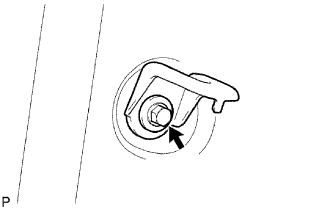
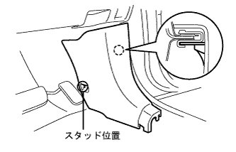

Deselation sensor (4WD) installation |
| 1. Deselation sensor installation |
Attach the deceleration sensor connector to the rear of the vehicle with two bolts.
Connect the connector to the deceleration sensor.
| 2. Sensor bracket installation |
Attach the sensor racket with two bolts.
| 3. Long -floor carpet ASSY FR installation |
| 4. Side No.1 Trim ASSY RH installation |
 |
Match the clip and claws and attach the side No.1 trim ASSY RH.
| 5. Rear seat 3 point type belt Assy Out RH installation (floor anka part) |
Tighten the rear seat 3 point type belt ASSY OUT RH (floor anka part) with bolts.
| 6. Long -seat outa belt assigned (floor anka portion) |
In the bolt, attach the front seat Otabelt Assy RH floor anka.
| 7. List of back hinge SUB-ASSY RH installation |
|  |
At the bolt, attach the rear seat back hinge RH.
| 8. Lap belt Otanka cover installation |
 |
Combine the claws and attach the wrap belt Otanka cover.
| 9. Front door opening trimweather strip RH mounting |
 |
Combine the paint mark of the Weather Strip (white, one place) and attach the front door opening trimweather strip RH.
| 10. Cowl side trim board RH installation |
|  |
Match the claws and studs and attach the cowl side trimboard RH.
| 11. Front doorskuff plate RH installation |
 |
The claws at the front and rear ends are used.
Make the claws and attach the front door scuff plate RH.
| 12. List seat cushion Assy installation |
 |
Pass the seat belt and make the hook.
Rena seat cushion Assy The clip at the front of the front.
| 13. List seat Batsuku ASSY installation |
 |
Put the rear seat back asser on the vehicle, tentatively attach the hole in the rear seat back frame and the location on the hinge side to temporarily attach the bolt.
Tighten the two bolts and attach the rear seat back Assessy.
Attach two new clips.
| 14. Long -seat ASSY RH installation |
Operate the seat track adjusting handle to slide the front seat ASSY to make it a front mort.
Put the sheet Assies on the vehicle and match the pins on the front seat leg ASSY RH part and the hole on the vehicle side.
Connect the vehicle side wire harness and the seat side wire harness.
Temporarily tighten the rear side of the seat Assy with two bolts.
Operate the seat truck adjusting handle to slide the front seat ASSY to make it a rear mole.
Temporarily tighten the front side of the sheet Assy with two bolts.
Operate the seat track adjusting handle to slide the front seat ASSY to make it a front mort.
Tighten the two bolts on the rear side of the sheet Assing in order of inner → outa.
Operate the seat truck adjusting handle to slide the front seat ASSY to make it a rear mole.
Tighten the two bolts on the front side of the sheet asser in the order of inner → outa.
The claws of the front seat leg cover are adjusted.
| 15. Slide adjuster lock synchronization inspection |
When the slide is operated, check that the left and right adjuster locks at the same time.
| 16. |
| 17. Test mode inspection (deceleration sensor chaeck) inspection |
reference)